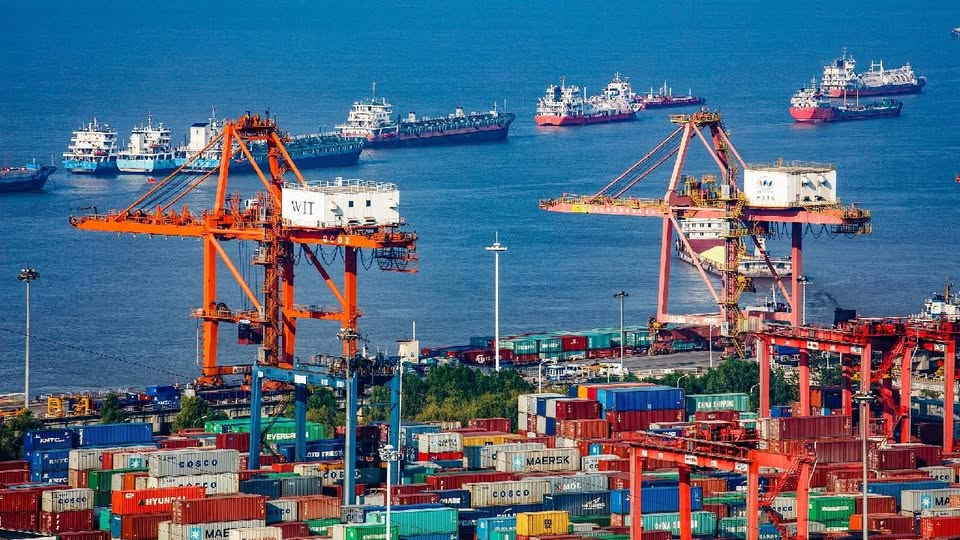

Lesson 1
Kalakalang Panlabas
- Palitan ng produkto at serbisyo sa pagitan ng mga bansa.
- Nagaganap ito dahil walang bansa ang makakatugon sa lahat ng pangangailangan nito nang walang tulong ng ibang bansa.
- Bilateral – kalakalan sa pagitan ng 2 bansa (hal. U.S at PH)
- Bloc – kalakalan sa pagitan ng organisasyon at isang bansa (hal. APEC at PH)
- Eksport (Pagluluwas) – pagpapadala ng produkto at serbisyo sa ibang bansa.
- Import (Pag-aangkat) – pagbili ng kalakal mula sa ibang bansa.

Lesson 2
Dahilan ng Kalakalang Panlabas
- Pagkakaiba ng Teknolohiya
- Pagkakaiba sa Pinagkukunang Yaman
- Pagkakaiba sa Panlasa
- Pagkakaiba sa Halaga ng Produksyon
Patakarang Umaapekto sa Kalakalang Panlabas
- Taripa (Tariff)
- Buwis sa mga produktong inaangkat.
- Nagpapataas ng presyo ng imported na produkto.
- Ginagamit upang maprotektahan ang lokal na produkto.
- Kota (Quota)
- Nililimitahan ang dami ng produktong maaaring ipasok sa bansa.
- Subsidy
- Tulong ng gobyerno upang mapababa ang gastos sa produksyon ng lokal na produkto.
Lesson 3
Batayan ng Kalakalang Panlabas
David Ricardo
- Absolute Advantage
- Nakakalikha ng mas maraming produkto gamit ang mas kaunting salik ng produksyon kumpara sa ibang bansa.
- Comparative Advantage
- Ang bansa ay nagiging espesyalisado sa paglikha ng isang kalakal.
- Nagagawa ang produkto nang mas mahusay o mas efficient kumpara sa ibang bansa.
- Halimbawa: Cebu – comparative advantage sa pagluto ng lechon.
Balance of Trade (BOT)
- Kalagayan ng kabayaran ng eksport at import ng bansa.
- Trade Deficit – mas mataas ang import kaysa export.
- Trade Surplus – mas mataas ang export kaysa import.
Lesson 4
Kabutihan ng Pakikipagkalakalan
- Mas maraming produkto ang mapagpipilian sa pamilihan.
- Napataas ang kalidad ng mga produkto.
- Nagkakaroon ng pagkakaunawaan ang mga bansa.
- Lumalawak ang pamilihan ng mga produkto.
Di-Kabutihan ng Pakikipagkalakalan
- Nagiging palaasa sa imported na produkto.
- Hindi nalilinang ang pagkamalikhain ng mamamayan.
- Maaaring mawala ang sariling pagkakakilanlan dahil sa dayuhang kultura.
Lesson 5
Samahang Pandaigdigang Pang-Ekonomiko
 World Trade Organization (WTO)
World Trade Organization (WTO)
- Nabuo noong Enero 1, 1995.
- Namamahala sa pandaigdigang sistema ng kalakalan.
- Layunin: bawasan ang hadlang sa kalakalan at tulungan ang mga developing countries.
Asia-Pacific Economic Cooperation (APEC)
- Itinatag noong Nobyembre 1989.
- Layunin: paunlarin ang ekonomiya ng rehiyong Asia-Pacific.
- Pinapadali ang pagnenegosyo at pamumuhunan.
Association of Southeast Asian Nations (ASEAN)
- Itinatag noong August 8, 1967.
- Layunin: paunlarin ang malayang kalakalan sa mga bansang kasapi.
- Nabuo ang ASEAN Free Trade Area (AFTA) noong January 28, 1992.
Lesson 6
Programang Nagtataguyod sa Kalakalang Panlabas
- Liberalisasyon sa Sektor ng Pagbabangko (R.A 7721)
- Pinapayagan ang mga dayuhang bangko na magtayo ng sangay sa bansa.
- Foreign Trade Services Corps (FTSC)
- Nagtataguyod ng mga lokal na produkto sa pandaigdigang pamilihan.
- Trade and Industry Information Center (TIIC)
- Nagbibigay ng impormasyon tungkol sa kalakalan at industriya.
- Center for Industrial Competitiveness
- Naglulunsad ng mga programa at pagsasanay upang mapahusay ang kakayahan ng manggagawa.